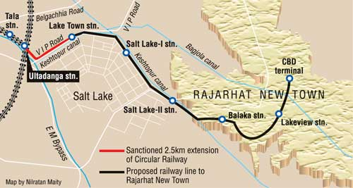
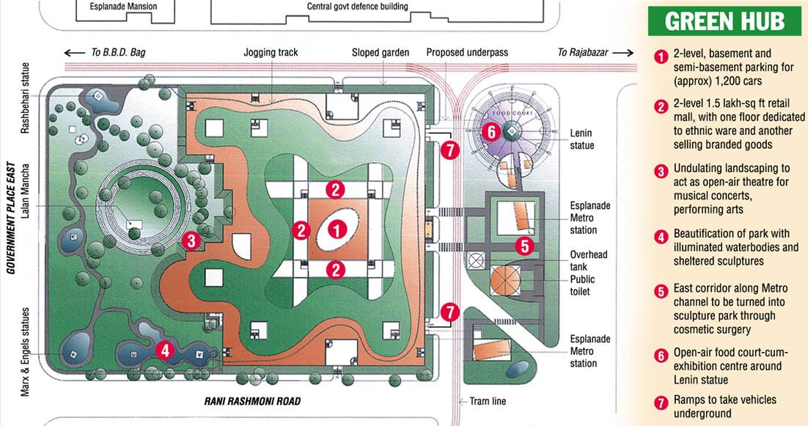

At the beginning of the 21st century, Calcutta — slightly worse from the wear of the last fifty years — seems to have a bright future. Significant infrastructure development projects are changing the shape of Calcutta altogether.
Calcutta's traditional manufacturing industries have declined steadily, but their demise has also meant that the pollution from old factories is disappearing. New manufacturing industries, chiefly petrochemicals and steel, are being set up at Haldia and Durgapur, thus sparing the city. Calcutta is becoming a hub for information technology and biotechnology.

Calcutta's Metro line is being extended. A second Metro line is proposed linking the new town of Rajarhat — being built for 500,000 residents to the northeast — to Howrah. A series of flyover bridges is providing an expressway link east-west through the city.
Major urban revitalisation projects are underway. The Metropolitan Insurance Building has been restored after the World Monuments Fund brought its plight to the limelight. A British society is working on the redevelopment of the Calcutta riverfront. Some results are already visible in the form of Millennium Park.

Calcutta's reputation as "hell on earth" — which she never deserved in the first place — is definitely headed towards oblivion. Calcutta is likely to build on its culture of a fun place full of creative juices — in art, music, literature or software — and reemerge as the Paris of the East. Until then the show goes on. Cholchhe! Cholbe!